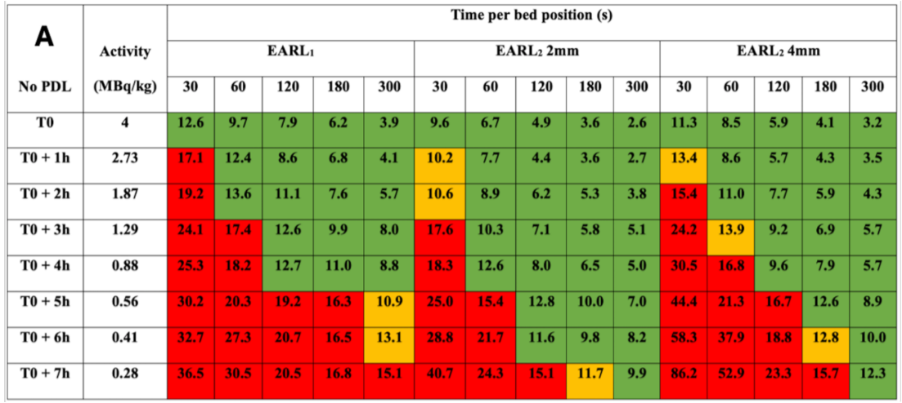
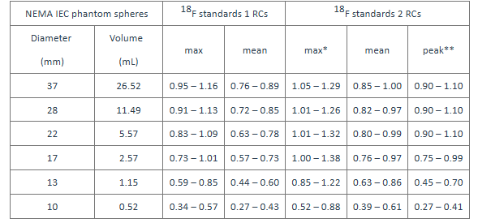

optimization
optimization
IQ
PET dose 최적화에서 사용된 영상품질평가법
EARL 매뉴얼에 따르면 스캐너별로 투여량을 최적화할 수 있다 [1].
팬텀스터디로 아래와 같은 테일블을 만들면 시간과 투여량을 조정하여 최적화할 수 있다 [2].


이때 아래의 기준을 만족해야 한다.

제안하는 지표
- 선량관리위원회 활동 (1점)
- EARL 권고와 같이 기종별로 FDG 투여량과 영상획득시간을 최적화하기 위한 자료 (논문상의 근거 포함)가 확보되어 있고 이에 근거하여 투여량/영상획득시간 프로토콜이 제시되어 있다.
- 1년 주기 또는 새로운 장비의 설치 또는 (방사성의약품의 투여량 또는 영상획득시간의 변경이 포함된) 검사 프로토콜의 변경이 있을 때마다, 병원별로 자체적으로 설정한 투여량 기준 이상이거나 영상품질 기준 이하인 경우들을 대상으로 최적화를 검토한 기록이 있다.
- 영상품질과 연계된 방사성의약품 투여량 (1점)
- 장비별로 지정한 날짜로부터 연속된 100건의 검사에서 투여량이 (체중당) 진단참고수준보다 10% 이상 적은 경우
- (대한핵의학회) 가이드라인에서는 투여량의 경우 권고치 +- 10% 구간을 사용하므로 진단참고수준보다 적은 양이라 함은 10% 이상 차이로 규정하였다.
- 영상품질을 liver CoV로 진행함에 따라 liver에 VOI를 설정할 수 없는 간암이나 간전이 등의 환자는 제외하여 합이 100건이 되도록 함
- 1항의 경우 내에서 liver CoV가 10% 이하인 수
- EARL에서는 CoV 15%가 clinically acceptable하지만, 이는 변별력이 없을 수 있으므로 시범사업을 통해 국내 CoV 자료가 충분히 구축되기 전까지는 위원회에서는 10%를 제안함.
- 장비별로 1항과 2항을 모두 만족하는 경우의 수에서 총연간검사건수에 대한 장비별 검사건수분율을 가중한 뒤 모든 장비의 합을 구하여 지표로 사용
- 시범사업을 통해 1항과 2항을 모두 만족하는 비율에 대한 국내자료가 구축 되면 적절한 cut-off를 제시하여 관리
- Phantom 및 SUV recovery coefficiency, CoV 평가방법은 EARL 준용
- 장비별로 지정한 날짜로부터 연속된 100건의 검사에서 투여량이 (체중당) 진단참고수준보다 10% 이상 적은 경우
References
1. EARL. Manual EARL accredition version 4.2. 2023.
2. Burgt A van de, Dibbets-Schneider P, Kotasidis F, Geus-Oei L-F de, Rietbergen DDD, Velden FHP van. [18F]FDG administered activity reduction capabilities of a 32-cm axial field-of-view solid-state digital bismuth germanium oxide PET/CT system while maintaining EARL compliance. Physica medica: PM: an international journal devoted to the applications of physics to medicine and biology: official journal of the Italian Association of Biomedical Physics (AIFB). 2025;131:104935.